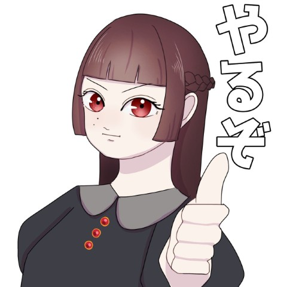
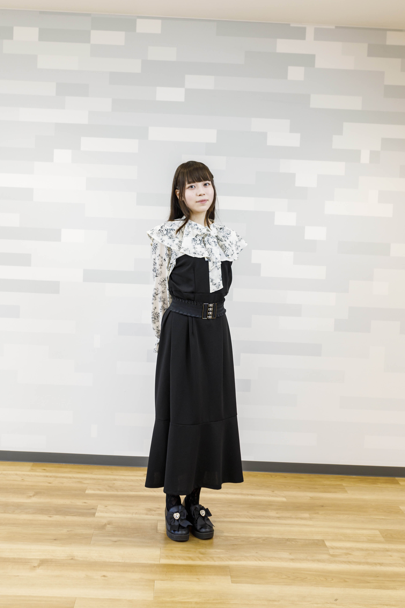

こんにちは！リオックマです 🧸
現在、高度専門士情報技術科で学びながら、PRやクリエイティブ制作を中心に活動しています。 デザインと開発のスキルを活かし、ユーザーに寄り添ったものづくりを心がけています。
IT・デザイン・コスメ発信の経験を活かして、ユーザーに寄り添ったWebサービスやクリエイティブ制作に関わりたいと考えています。
好きなこと： デザイン、コスメ、クリエイティブな表現
リオックマ 🧸ᩚ
PR・クリエイティブ制作 | 高度専門士情報技術科 | リオックマ 🐾
IT・デザイン・発信の経験を活かし、ユーザーに寄り添った課題解決に取り組んでいます。


こんにちは！リオックマです 🧸
現在、高度専門士情報技術科で学びながら、PRやクリエイティブ制作を中心に活動しています。 デザインと開発のスキルを活かし、ユーザーに寄り添ったものづくりを心がけています。
IT・デザイン・コスメ発信の経験を活かして、ユーザーに寄り添ったWebサービスやクリエイティブ制作に関わりたいと考えています。
好きなこと： デザイン、コスメ、クリエイティブな表現
企画・設計から実装まで全工程、CADで3Dモデリング、3Dプリント、プロトタイプ制作、市場調査
制作目的：メイクブラシ洗浄の手間を自動化し、衛生的に保つこと
直面した課題：初期案（コップ上でふるだけ）では洗浄力が弱く、また3Dプリントプレートを追加した段階ではプレート自体が回転してしまう課題がありました。
改善・解決策：3Dプリントで凹凸プレートを制作し、物理的にこする本当の洗浄方式を実現。外周ツメを設計して回転を防止し、複数種類の凸を作ることで筆の内部までしっかり洗えるように改良しました。
学んだこと：CADでの3Dモデリングスキルに加え、プロトタイピングを繰り返してユーザー視点で課題を発見し、即座に設計へフィードバックするアジャイルな改良プロセスの重要性を学びました。
次の改善点：完全自動化（Raspberry Piでモーター制御）や、複数ブラシ同時洗浄機能、洗浄液の自動交換システムを追加したいです。
UXリサーチ、ペルソナ設定、ワイヤーフレーム作成、UIデザイン、インタラクティブプロトタイプ制作、ユーザーテスト
制作目的：ユーザー中心設計の実践と、使いやすく直感的なモバイルアプリのUX設計
直面した課題：ユーザーの本当のニーズを正確に把握し、操作迷子にならない画面フローと情報を整理した画面設計をする必要がありました。
改善・解決策：ターゲットリサーチを行い、Figmaでワイヤーフレームから詳細プロトタイプまで一貫して制作。さらに、アルバイト先のパン屋「Ariman Bakery」にて、FigmaとCanvaを活用し、スタッフが迷わず動ける店舗時間割表（通常/45分/40分授業対応）や販促デザインを制作して業務課題を解決しました。
学んだこと：単に「綺麗な画面」を描くだけでなく、実際のユーザー動線や業務上のボトルネック（Ariman Bakeryでの時間割ニーズなど）を解消するための情報設計（インフォメーションアーキテクチャ）の重要性を学びました。
次の改善点：より多様なユーザーへのテストを行い、アクセシビリティをさらに考慮したUIへとブラッシュアップしていきたいです。
コンテンツ企画・制作、写真撮影・編集、投稿管理、コミュニティマネジメント、PR案件対応
制作目的：コスメのリアルな使用感や魅力を視覚的かつ論理的に伝え、ターゲットユーザーに有益な情報を発信する
直面した課題：美容・コスメの発信者は非常に多く、単にきれいな写真を載せるだけではフォロワーやエンゲージメントが伸び悩んでしまう点でした。
改善・解決策：Photoshopを使って「一瞬で効果や色味が伝わる」ような画像のレタッチ・文字入れを徹底。読者の購買ハードルを下げるために、メリットだけでなくデメリットや使い方のコツまで正直に記載するコンテンツ設計へと改善しました。
学んだこと：「自分が書きたいこと」ではなく「ユーザーが知りたい情報」を先回りして整理する、分析的マーケティング視点とコンテンツ設計の重要性を学びました。
次の改善点：インサイトデータをより細かく分析し、投稿時間帯の最適化や、ショート動画の活用による訴求力の強化を図りたいです。
事前にAI（アンチグラビティ、Claude、Copilot）を活用した体験授業の企画設計、オープンキャンパスの企画・運営、来校者への学校紹介・案内、スタサプ、学校WEBサイト等でのメディア出演
制作目的：来校する高校生や保護者の方に学校の魅力を伝え、親しみと安心感を持って進路を選んでもらえるようサポートすること
直面した課題：初めて専門学校に来る高校生は緊張しており、従来の受け身の学校説明だけではリアルな授業の楽しさや技術の魅力を十分に伝えきれない点でした。
改善・解決策：初心者の高校生でも「これなら自分にもできそう！」と感じてもらえる丁寧な授業を心がけました。
学んだこと：相手の立場（未経験の高校生）に立って分かりやすい言葉で伝える表現力や、臨機応変なプレゼン対応力、チームでイベントを作り上げるための連携力とリーダーシップを学びました。
次の改善点：さらに多くの学科のカリキュラムやプロジェクトの強みを把握し、どんな質問に対しても即座に分かりやすく答えられる幅広い知識を身につけたいです。
写真撮影、Photoshopによるカラー補正・レタッチ・画像合成、Premiere Proによるスライドショー動画の企画・編集（カット・テキスト挿入・BGM選定・トランジション演出）
制作目的：Adobe Creative Cloudのツール群を活用し、写真の魅力を最大化するレタッチ技術と、それらをストーリー仕立てで演出する動画編集の表現力を習得すること
直面した課題：写真ごとに撮影環境や光が異なるため、そのまま動画のスライドショーに繋げると色調がバラバラになり、動画全体の統一感やクオリティが損なわれてしまう点でした。
改善・解決策：動画にする前に、Photoshopでカラーグレーディングやトーンカーブ調整、肌のレタッチを入念に行い、すべての写真の色調・世界観をあらかじめ統一。その上で、Premiere ProでのトランジションとBGMのテンポ感を合わせることで、一体感のある作品に仕上げました。
学んだこと：複数のクリエイティブツール（Photoshop × Premiere Pro）をシームレスに組み合わせて制作するワークフローの効率性と、動画全体の雰囲気を揃えるための「事前の画像レタッチ」の重要性を学びました。
次の改善点：今後は After Effects を活用した高度なモーショングラフィックス of 追加や、よりシネマティックなカラーグレーディングに挑戦し、表現の幅を広げたいです。
IT企業・学術機関の訪問、現地学生との交流、クリエイティブ・スタディ、フィールドワーク
目的：世界最先端のテクノロジーとクリエイティブに触れ、グローバルな視点と自立心を養う
解決方法：8泊10日の滞在を通じ、積極的に現地の人々とコミュニケーションを図り、異文化環境での適応力と問題解決能力を実践
学んだこと：テクノロジーが生活を拡張する可能性、クリエイティブの本質的な共通点、そして未知の事態に対処する勇気。